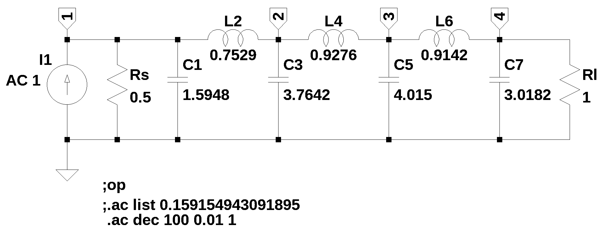

Validation tests
Basic validation of the Python code consisted of analyzing simple networks and examining the results. A more comprehensive evaluation of the code was performed by solving test circuits and comparing the results to LTSpice. It is assumed, without offering any mathematical proof, that if the NumPy numerical solution agrees with the LTSpice solution, the SymPy symbolic solution is also correct.
Code verification often looks at requirements or specifications versus what was implemented. This project didn’t have a formal set of requirements, only a general goal of implementing symbolic MNA using the Python libraries. No formal software or code verification is included.
The circuits used in the validation tests are listed below. The validation circuits are a collection of problems from textbooks or large and complex circuits that I made up that include various elements or unique combinations of elements or topologies. The circuits range from simple to large and complex. The largest circuit consists of 32 nodes, 59 branches and multiple instances of all of the supported element types.
| Test file | Circuit Description | notes |
|---|---|---|
| test_1 | Resistors, independent and dependent sources | DC analysis |
| test_2 | Resistors and independent sources | DC analysis |
| test_3 | Same as test_1, with R2 replaced with C2 and R3 replaced with L1 | AC analysis |
| test_4 | Resistors and one of each type of source | AC analysis |
| test_5 | Test 4 w/ L & C’s and one of each type of source | AC analysis |
| test_6 | Test 4 w/ L & C’s, coupled L’s and one of each type of source | AC analysis |
| test_7 | Large circuit and two or more of each element type w/o op amps | AC analysis |
| test_8 | Test_7 w/ op amps included | AC analysis |
| test_9 | Current sources only dependent and independent | DC analysis |
| test_10 | Current and voltage sources only, no LRCs | DC analysis |
| test_11 | Three coupled inductors | AC analysis |
| test_12 | LC ladder low pass filter | AC analysis |
| test_13 | Ring of current sources and inductors a pathological case |
AC analysis |
| test_14 | A circuit with one unknown current | AC analysis |
| test_15 | A circuit with no unknown currents | AC analysis |
In LTSpice the series resistance for inductors defaults to 1e-3 Ohms unless set to zero. Leaving the default series inductance at 1e-3 Ohms will cause small numerical differences in the solution obtained by LTSpice.
Summary of test results
LTSpice displays results using 6 digits, with zero to two digits to the left of the decimal point and the remainder of the digits to the right of the decimal point. The Python results can be displayed with 6 digits to the left of the decimal point. So when comparing the numerical results there will be some rounding differences. Most of the test circuits analyzed with the MNA Python code produced numerical results that were identical within rounding, to those obtained from LTSpice. However, there were a few exceptions discussed below.
Test circuit 8

The circuit shown above is the test circuit for Test 8. This circuit is too large to produce meaningful symbolic solutions. The numeric results obtained from the Python MNA code have larger differences to LTSpice than was typical for the other test circuits. There are small differences at \(\omega = 0\) and \(\omega = 1\) between the Python NMA code and LTSpice solutions; with the differences being less than 0.001. The results for the AC sweep had larger differences. The magnitude and phase results over the frequency range of 0.01 to 10 Hz shows that the magnitude difference was as much as 0.005 and the phase was as much as 0.02 difference. At this time I don’t have an explanation for the differences.
Test circuit 12

The Python MNA code produced node voltage solutions for the AC sweep that were slightly different from those obtained from LTSpice for the test circuit shown above. The magnitude difference was at most 0.001 and the phase difference was as much as 0.175 degrees. I’m not sure why for some circuits there is an almost exact numerical agreement to the LTSpice results and for other circuits there is as much as a 0.001 difference.
Test circuit 13
The circuit constructed for Test 13, shown above, was designed to see how the MNA code would handle such an unusual circuit. A loop of inductors and current sources is not a typical circuit configuration. LTSpice produced an error during the operating point analysis, whereas the Python MNA code would generate network equations without issue. However, the Python code would not produce a solution for all the circuit unknowns; the current in L4 was not determined. To fix this problem a small series resistor was added to L1.
If we stop to consider how the circuit is operating at DC, we see that each of the current sources have an inductor in parallel, which at DC, acts as a short circuit. Which means that the node voltages would all be equal, \(v_1 = v_2 = v_3 = v_{ref}\). So the solution to the network equations at DC should be \(v_1 = v_2 = v_3 = 0\). At a frequency of \(\omega = \infty\), the inductors would act as an open circuits and the currents flowing into each node would not be equal, because the current sources are not equal or opposite, so Kirchhoff’s current law would be violated. So this is a pathological case and such cases might not be obvious by inspection. Also, without the small series resistor added to L1, the AC analysis results produced by the Python MNA code agreed with the LTSpice results. The conclusion is that some sort of sanity check is needed for the circuit and just because the Python code spits out answers that are correct at some frequencies, it does not mean that the MNA circuit equations are valid at all frequencies.
Test circuit 14

The circuit above was designed to have only one unknown current. The magnitude difference was at most 0.006 and the phase difference was as much as 0.6 degrees between the Python MNA and LTSpice results. It is kind of curious that circuits for Tests 12, 13, and 14 which are all driven by sinusoidal current sources have AC solutions which are slightly different from LTSpice.
The following file types are archived here:
| file name | Description |
|---|---|
| test_*.asc | LTSpice circuit schematic |
| readme.md | a description of the circuit |
| test_*.ipynb | test report Jupyter notebook |
| test_*.net | Spice net list |
| test_*.png | image of the schematic for display in the notebook |
| test_*.csv | csv data exported from LTSpice |